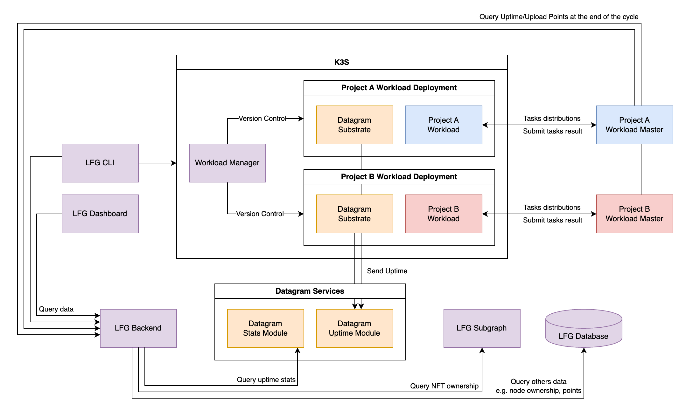

Node System Backend (BE)¶
This repository contains the backend system for the Node System project, built using NestJS, Redis, and PostgreSQL. It provides APIs and services for managing nodes, projects, and workloads, with features like uptime tracking, notifications, and data persistence.
Prerequisites¶
- Node.js (v22 or higher)
- Docker and Docker Compose
- PostgreSQL and Redis (if not using Docker)
How to run¶
- Run services using Docker Compose (Optional) This will start PostgreSQL and Redis in the background.
- Install dependencies:
- Copy the configuration file:
- Update the
config.yamlfile with your own settings. - Run the application:
Folder Structure¶
├── prisma
│ ├── schema # Contains the Prisma schema file for defining the database structure.
│ └── seed.ts # Script for seeding the database with initial data.
├── src
│ ├── api
│ │ ├── v1 # Version 1 of the API, organized by feature modules.
│ │ │ ├── inventory # API endpoints for managing inventory.
│ │ │ ├── node # API endpoints for managing nodes.
│ │ │ ├── notification # API endpoints for sending notifications.
│ │ │ ├── project # API endpoints for managing projects.
│ │ │ ├── user # API endpoints for user management.
│ │ │ ├── workload # API endpoints for managing workloads.
│ │ │ └── index.ts # Entry point for the v1 API module.
│ │ ├── api.module.ts # Module definition for the API layer.
│ │ ├── api.service.ts # Service layer for handling API logic.
│ │ └── index.ts # Entry point for the API directory.
│ ├── app
│ │ # Core application module, typically includes the main application logic.
│ ├── common
│ │ ├── decorators # Custom decorators for enhancing functionality.
│ │ ├── exceptions # Custom exception handling logic.
│ │ │ ├── client # Client-side exceptions.
│ │ │ ├── filters # Exception filters for handling errors.
│ │ │ └── server # Server-side exceptions.
│ │ ├── guards # Authorization and authentication guards.
│ │ ├── helper # Utility functions and helpers.
│ │ └── interceptors # Interceptors for modifying request/response behavior.
│ ├── configs
│ │ # Configuration files for the application (e.g., environment settings).
│ ├── modules
│ │ ├── cron # Cron job scheduling and management.
│ │ ├── mail # Email service module.
│ │ ├── pg # Direct access PostgreSQL database module.
│ │ ├── prisma # Prisma ORM integration module.
│ │ ├── redis # Redis caching and data store module.
│ │ └── uptime # Uptime monitoring module.
│ ├── third-party
│ │ ├── datagram # Integration with Datagram services.
│ │ └── thegraph # Integration with The Graph protocol.
│ └── main.ts # Entry point for the application.
├── <configuration files> ...
├── README.md
└── tsconfig.json
Node System Backend is built from NestJS, responsible for:
- Node and workload management
- Uptime tracking
- Notification when node/workload is down
- Save user reward points
Architecture¶
The Node System Backend is simple as below:
graph TD
A[NestJS Backend]
G[Subgraph]
P[(PostgreSQL)]
R[Redis]
A -->|Query| G
A -->|Prisma ORM| P
A -->|Cache Layer| R
subgraph External Services
G
end
subgraph Data Layer
P
R
endIt consists of:
- NestJS Backend: The main application that handles API requests/responses and cron jobs.
- PostgreSQL: The database used for storing node, worqkload, uptime and reward information.
- Redis: The cache layer used for storing node/workload status.
- Subgraph: For fetching NFT data, user balances.
Datagram integration¶
If project owners do not have their own reward distribution system, they can leverage the Datagram. Datagram is the DePIN baselayer — an AI-driven, Hyper-Fabric Network enabling fast, scalable connectivity and DePIN interoperability.
The entire system architecture integration with Datagram is as below:

Each workload now has a Datagram substrate distributed together with its main components. Uptime tracking and reward distribution will be handled by the Datagram network instead of the Node System Backend.